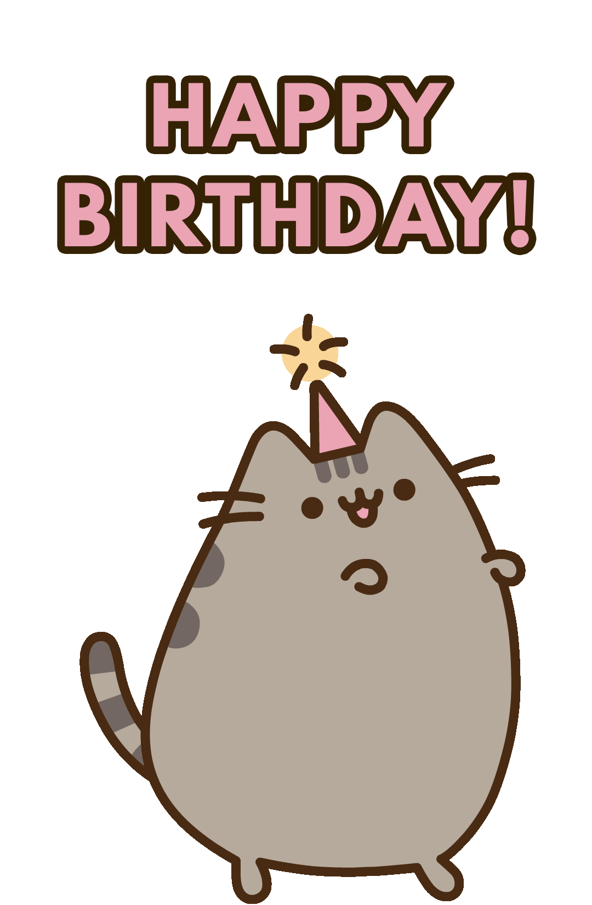

Selamat ulang tahun Rachma. 🎉 🎂
Dengan segala rintangan dan cobaan yang Rachma temui, Rachma dengan sabar menghadapi itu semua dan dengan senyum ceria di wajah, Rachma bisa bertemu lagi dengan hari spesial Rachma yang ke 23.
Meskipun saya tidak selalu tahu masalah apa yang sedang Rachma alami, tapi saya berani bilang "Orang yang paling berhak dan pantas mendapatkan kebahagiaan, itu Rachma".
Rachma mungkin sering merasa tertinggal dari orang lain.
But We are the one that hold the pen in this giant novel book.
Jika anggapannya hidup sebagai menulis buku novel, Rachma enggak harus mengikuti aturan cerita dari orang lain. Buatlah cerita yang semenarik mungkin dengan cara Rachma sendiri.
Bagi saya novel cerita Rachma justru lebih menarik dan lebih bernilai tinggi dari orang lain.
So write the novel in your own style. Happy Rachma day 🥳
